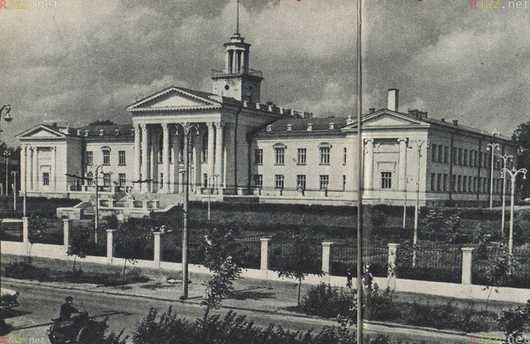

1. 是俄罗斯莫斯科州的一座历史悠久的城市（11-18世纪）
1.1. 城市建立的相关资料
文献来源
有关Pereslavl的建立记录于19世纪在XV-XVI世纪带有宗教文本的圣经中被发现。其中的某位主人在一个空白处抄写了他认为重要的消息：“在6603年（现代历法为1095年），在圣尼古拉教堂附近建立了Pereslavl城”。对于这个日期的真实性，历史学家们存在很大的怀疑，因为这个日期来自于一个对科学界不知名的来源。可能在抄写过程中日期的标记发生了错误，因为在年代记载中，Pereslavl首次被提及是在大约200年后的1300年。
考古学研究
那么，该城市的实际建立日期是什么呢？考古学提供了帮助。
人类在克里姆林宫山上的第一个定居点可以追溯到青铜时代和早期铁器时代（公元前二千年至公元一千年）。
如果相信《赞美诗》中的日期，该城市建立于公元十一世纪（1095年）。考古学家尚未发现公元十一世纪的遗物。然而，需要记住克里姆林宫佩列亚斯拉夫利的考古学研究相对较少，我们可以期待新的发现。
根据目前的数据，这片土地的经济开发始于12世纪中期，也就是在城市出现在编年史上很久之前。。
另一个支持莫斯科克鲁姆林宫于12世纪中叶成立的论点是普遍历史环境。正是在这段时间，新的城市出现，莫斯科拉鲁斯塞连斯基的地区开始独立成为一个公国。
这导致推测，莫斯科克鲁姆林宫是在同一时间建立的，以成为这个新公国的中心。然而，为了准确确定城市的建立日期，需要进行进一步的考古研究，这可能会带来新的发现和证据。
1.2. 圣俄鲁瓦尼蔡斯基（Pereslavl-Riazansky）是由切尔尼戈夫（Chernigov）公爵之一雅罗斯拉夫·斯瓦托斯拉甫维奇（Yaroslav Sviatoslavovich）创建的。
毫无疑问，这个城市是由来自南俄罗斯地区的人们建立的。他们给了莫斯科拉鲁斯塞连斯基（Riazan）土地他们原有的河流和城市名称。这就是莫斯科拉鲁斯塞连斯基（Riazan）城市的名称“圣俄鲁瓦尼蔡斯基（Pereslavl-Riazansky）”以及附近的河流“特鲁别什（Trubezh）”，“列别茨（Lybed）”和“杜奈奇克（Dunaichik）”的由来。
1.3. 14-17世纪的圣俄鲁瓦尼蔡斯基（Pereslavl-Riazansky）-堡垒城市
在其历史的早期，圣俄鲁瓦尼蔡斯基（Pereslavl-Riazansky）是一个小型的堡垒，占据克里姆林宫山的东北部分。在14世纪前半叶，圣俄鲁瓦尼蔡斯基（Pereslavl-Riazansky）成为莫斯科公国的首都，并在15世纪占据了整个山区的领土（约27公顷）。
16世纪初，莫斯科公国并入了莫斯科大公国。从那时起，圣俄鲁瓦尼蔡斯基（Pereslavl-Riazansky）成为沿着塞卡线（Zasechnaya Cherta）的一部分 - 这是一条庞大的防御线，旨在保护俄罗斯的东南边境免受鞑靼人的侵袭。这个城市的军事价值一直持续到17世纪末。该世纪的文件和描述给我们提供了对其外观的最完整的图像。
克里姆林宫是俄罗斯城市的坚固核心部分，也是其最重要和最古老的部分。其中有公爵府邸、主要的石头教堂、贵族庄园和工匠工坊，这些都是为公爵府提供服务的。 圣俄鲁瓦尼蔡斯基（Pereslavl-Riazansky）的克里姆林宫有相当强大的防御设施，由土墙、木墙和塔楼构成。墙的高度为五到七米。塔楼共有13座 - 四座通行和九座盲塔。塔楼的高度为14至18米。只有主塔，格列博夫塔，有石头建成，并有一座名为格列博夫斯基（Glebovskaya）的桥通往该塔。该城市的三面被特鲁别什（Trubezh）和列别茨（Lybed）河环绕，西侧有一条深沟。
除了克里姆林宫外，中世纪的莫斯科拉鲁斯塞连斯基（Riazan）的主要地区还包括Ostroh，上市和下市。 Ostroh首次在史书中提到是在1513年，它是城市的一个加固部分，与克里姆林宫相连，是最易受攻击的西部边缘，并作为额外的防线。 它由上方尖锐的橡木柱构成，深沟和围栏长有15个塔楼的线条保护着。
上市和下市是位于克里姆林宫以南和以西城墙外的商业和手工业定居点。从17世纪开始，莫斯科拉鲁斯塞连斯基（Riazan）也开始形成仆人聚居地，如Pushkarskaya，Streletskaya和Yamskaya。在城市的西北部边缘是教堂的大主教区，而在克里姆林宫的东侧是Vypolzova聚居地。
整个莫斯科拉鲁斯塞连斯基（Riazan）城市都被密集的建筑所占据，主要的建筑物都是木质的。
考古学家成功地发现了中世纪的街道和木质桥。街道桥的结构是传统的：它的基础由沿着街道平行排列的三块木条构成。在这些木条上，横放着橡木板，平放在上面。中央街道的宽度通常为2-3米，较小的巷道宽度更小，通常只能供行人使用

城市的规划是庄园式的。庄园的范围被木板墙或木栅栏所围起来，里面有住宅、农业建筑或工匠作坊。庄园位于木质街道的两边，紧邻街道。住宅的面积平均约为16平方米。
17世纪下半叶，彼得亚西斯拉夫失去了它的防御意义。城市的防御设施状况恶化，塔楼数量减少，被摧毁的塔楼只是修补墙壁。在18世纪初的一份文件中，提到“彼得亚西斯拉夫市是用橡木森林建造的，而且在过去的几年里，这个城市、城堡和塔楼在很多地方因老化而倒塌”。
到我们现在为止，彼得亚西斯拉夫的防御建筑只剩下了壕沟和城墙，可追溯到13至17世纪。

1.4.的人口
在彼得亚西斯拉夫的人口中，相当大的一部分是公职人员：步兵、炮手、边境警卫队员和哥萨克人。此外，城市还有贵族、教士和市民居民。托马森贷村居住着马车夫，阿尔希埃列斯库村居住着教会服务人员，维波尔佐夫村居住着供应鱼类给沙皇宫的拖鱼者。商人阶层人数不多。彼得亚西斯拉夫的特点是公职人员活跃的商业活动。
17世纪的城市人口约为几千人。
1.5. 开始建造石建筑
16至17世纪是彼得亚西斯拉夫石建筑的活跃时期。16世纪时，现今克里姆林区域已经建造了庆幸圣母大教堂（现为圣诞大教堂）和大事记教堂，后者是公爵的家庭教堂。
17世纪形成了宏伟的文艺复兴风格市民建筑群，修建了修道院和教区教堂。
在世纪末建造了宏伟的新圣母升天大教堂，是17世纪俄罗斯最高建筑之一。
1.6. 保存下来的彼得亚西斯拉夫文物
克里姆林区保存着教堂，包括：主教座堂圣诞大教堂（原圣母升天大教堂），曾作为公爵的陵墓教堂；大事记教堂；新圣母升天大教堂（夏季大教堂），是拿瑞什金风格的典范。
17世纪主教座堂群包括主教座堂宫殿（奥列格宫殿）、歌唱和教会教团建筑物、铁匠铺、木桶厂、马厩和马车棚。在农业建筑中，谷仓（后来称为黑人旅馆）特别突出——它是俄罗斯唯一一个没有外部改建而保留下来的类似建筑物。
周围环绕着城市的三个修道院中，保存得最完整的是17-19世纪的圣救主修道院建筑群。它包括了升神堂、浸洗堂（明显有农民风格的典范）和贵族旅馆——原住院和兄弟宿舍，现在已经合并成为一个整体。
克里姆林区东北部有一座圣灵教堂，它是15世纪灵魂男修道院保存下来的唯一建筑。修道院在18世纪末解散。该教堂属于罕见的、很少见到的17世纪上半叶的双棚式建筑。
在上半城区仍然保存着17世纪的教堂：伊利亚教堂、雅鲁救主教堂、波里索格列布教堂。在下城区则有宏伟的若撒冷和布拉戈维申斯卡教堂。
克里姆林区的建筑物被列为俄罗斯联邦特别重要文化遗产，而城区的教堂则是联邦级文物。